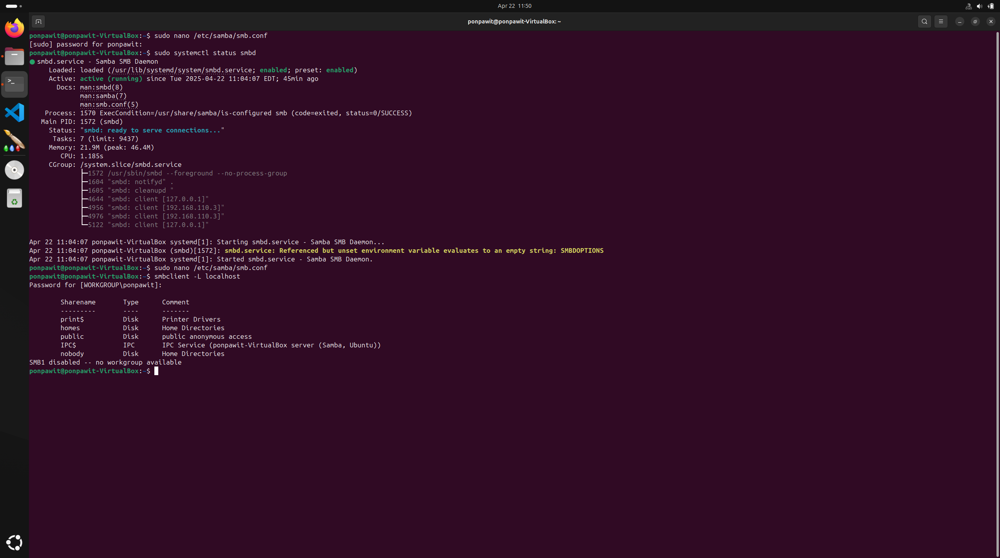
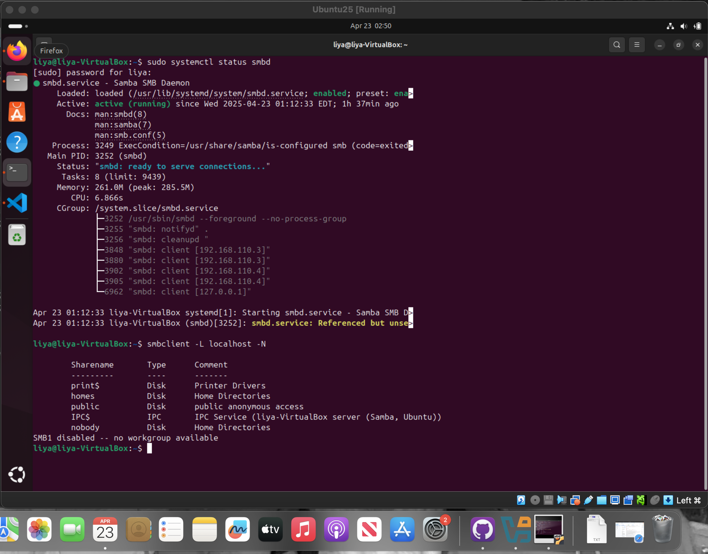

Here is the final setup of the Samba server. The screenshots above is called smb.conf. It tells Samba how to act, what to share, and who can see the files., We changed the last two parts
 We installed a program called Samba on our Linux computers. Samba lets different computers share files with each other, like if one computer is using Windows and the other is using Linux.
Above are the screenshots that show both my Samba server and my partner’s server running.